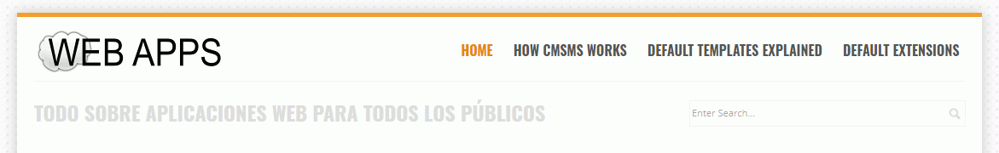

Entre en phpMyAdmin como usuario root y cree un usuario de MySQL con nombre iaw_cmsms_1, contraseña iaw_cmsms_1 y base de datos iaw_cmsms_1.
Abra en el navegador /iaw/webapps/cmsms e inicie la instalación.
Resuelva las advertencias iniciales (actualice la página de instalación con Ctrl+F5 tras modificar el fichero de configuración, en su caso) y haga una captura de toda la pantalla en la que se vea que se han resuelto las advertencias iniciales:
Instale CMS Made Simple:
Usuario administrador admin y contraseña adminadmin.
Nombre del sitio: WebApps SU-NOMBRE
Idioma: Español
Haga dos capturas de toda la pantalla una vez instalado, del sitio y tras entrar como administrador:
2. Logo y lema del sitio
Suba el archivo de logotipo a la carpeta simplex (en la carpeta adecuada). Haga una captura de la carpeta en la que ha subido la imagen.
Modifique el código fuente de la plantilla Simplex para que se utilice el logo subido. Haga una captura de la pantalla de edición de la plantilla en la que se vea la modificación de la plantilla.
Modifique el código fuente de la plantilla Simplex para cambiar el lema del sitio a Todo sobre las Aplicaciones Web para todos los públicos. Haga una captura de la pantalla de edición de la plantilla en la que se vea la modificación de la plantilla.
Haga una captura de toda la pantalla mostrando los dos elementos:

3. SlideShow
Suba las imágenes de banners (Banner 1 y Banner 2) a la carpeta simplex (en la carpeta adecuada). Haga una captura de la carpeta en la que ha subido las imágenes.
Modifique la plantilla Simplex SlideShow para que se muestren únicamente las dos imágenes con los mensajes ("Noticias sobre" + "Aplicaciones Web" y "Tutoriales sobre" + "WordPress"). Haga una captura de la pantalla de edición de la plantilla en la que se vea la modificación de la plantilla.
Haga dos capturas de toda la pantalla en la que se vean las imágenes:
4. Menús
Modifique los menús de manera que haya dos opciones de menú: Inicio y Menú
La opción Inicio mostrará una página de presentación.
La opción Menú incluirá una opción Acerca de que mostrará una página de presentación
Haga una captura de la pantalla de edición de los menús en la que se vea la modificación realizada.
Haga dos capturas de toda la pantalla en la que se vean las imágenes:
Nota: En la captura de Inicio se ha recortado el banner para que ocupe menos espacio.
5. Añadir noticia
Añada una noticia al sitio.
Haga una captura de toda la pantalla mostrando el resultado:
6. Traducción
Añada dos traducciones al archivo de traducción al español adecuado para cambiar dos mensajes que se muestran en inglés en el Gestor de Módulos:
Nota: Para encontrar una cadena en los archivos puede utilizar la búsqueda en archivos de Notepad++ o de Visual studio Code.
Haga dos capturas de toda la pantalla en las que se vean el fichero modificado y el resultado conseguido:
7. Cambiar el aspecto visual
Modifique la hoja de esilo Simplex Layout para obtener el resultado de la captura. Haga capturas de la pantalla de edición de la hoja de estilo en la que se vean las modificaciones realizadas.
Haga una captura de toda la pantalla mostrando el resultado:
8. Alias
Cree un alias para poder acceder a CMS Made Simple mediante la dirección http://localhost/cmsms.
Escriba un fichero alias.txt con el alias que ha creado.
Haga una captura de toda la pantalla mostrando que funciona el alias.
9. Copia de seguridad
Como usuario iaw_cmsms_1 haga una copia de seguridad de la base de datos.

{kind=link}
{kind=link}